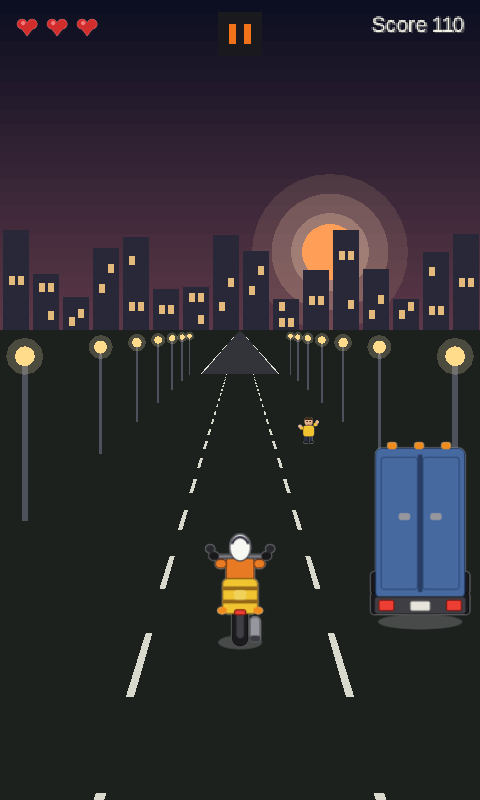
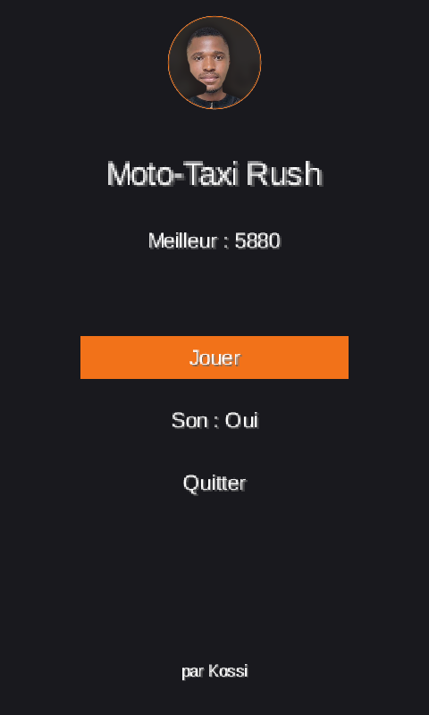
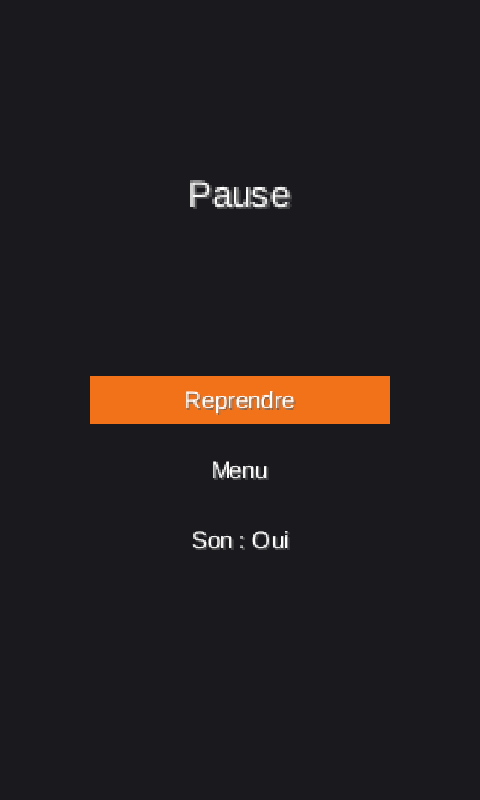
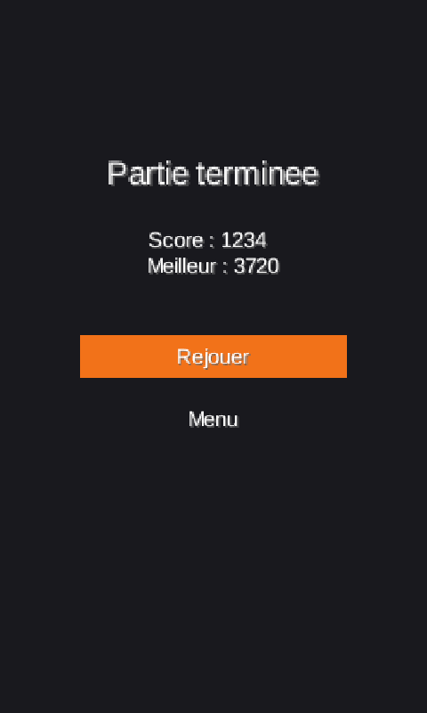

Documentation du jeu — volume 1 sur 4
Présentation, univers et règles de jeu
Moto-Taxi Rush est un jeu d'arcade en portrait : vous pilotez une moto-taxi sur une avenue de ville au crépuscule. La route défile sans fin, le trafic se densifie et les passagers tendent le bras sur le bas-côté. Il faut tenir le plus longtemps possible, encaisser le plus de courses et ne pas finir sous un camion.
Une partie dure de quelques dizaines de secondes pour un débutant à plusieurs minutes pour un joueur expérimenté. Il n'y a ni niveau à charger, ni sauvegarde de progression : seul le meilleur score est conservé d'une session à l'autre.
| Élément | Valeur |
|---|---|
| Genre | Arcade, esquive en vue de dos, difficulté croissante |
| Orientation | Portrait, 480 × 800 unités de monde (ratio 3:5) |
| Cibles | Android 7.0 et plus (APK), application de bureau Windows / Linux / macOS |
| Mode | Solo, hors ligne, sans publicité ni achat |
| Technologie | Java 17 + libGDX 1.14.2, rendu pseudo-3D en 2D |
La scène est une artère urbaine à l'heure où les lampadaires s'allument. Le ciel descend d'un bleu nuit vers un rose poussiéreux, un soleil bas rougit l'horizon et se découpe derrière les silhouettes d'immeubles. Les fenêtres s'allument une à une, les lampadaires projettent un halo chaud sur le bitume, et la route se referme en trapèze vers un point de fuite.
Le décor est volontairement dépouillé : pas de texture photographique, seulement des aplats et des lumières. Cette sobriété sert deux objectifs — garder une lisibilité parfaite à petite taille sur un écran de téléphone, et laisser le regard accroché aux véhicules et aux passagers, les seuls éléments qui demandent une réaction.


| Action | Clavier | Tactile |
|---|---|---|
| Aller à gauche | Flèche gauche ou A / Q | Appui sur la moitié gauche de l'écran |
| Aller à droite | Flèche droite ou D | Appui sur la moitié droite de l'écran |
| Pause | Échap | Bouton pause en haut au centre, ou bouton Retour Android |
| Naviguer dans un menu | Flèches haut / bas puis Entrée | Glissement vertical puis appui simple |
| Quitter la pause | Échap ou Retour | Option « Reprendre » |
Le changement de voie est volontairement contraint : la moto glisse d'une voie à la fois, en 0,16 s, avec un adoucissement en début et en fin de mouvement. Un appui supplémentaire pendant le glissement est ignoré, ce qui évite les sauts involontaires de deux voies quand on tapote vite.
| Obstacle | Taille (unités) | Comportement |
|---|---|---|
| Voiture | 70 × 110 | Descend à la vitesse de la route, bloque sa voie |
| Camion | 90 × 180 | Plus large et plus haut : masque la vue derrière lui |
| Nid-de-poule | 80 × 80 (aplati à l'écran) | Posé au sol, moins haut mais aussi pénalisant |
Une règle de génération garantit qu'il reste toujours au moins deux voies libres : un obstacle n'apparaît que si, après son apparition, une voie au moins reste franchissable. Le jeu ne peut donc jamais produire de mur infranchissable, même à haute vitesse.
Le score monte de deux façons :
Un choc casse la série : le compteur de combo repart à zéro. Un passager raté, en revanche, ne pénalise pas — il disparaît simplement en bas de l'écran. Le combo est affiché au-dessus de la moto, et le bruitage de ramassage monte d'un demi-ton à chaque passager de la série, ce qui donne un retour sonore immédiat sur la performance.
La difficulté ne dépend pas du score mais du temps de jeu écoulé, ce qui évite les emballements : un bon joueur ne se retrouve pas puni par son propre score.
| Paramètre | Départ | Évolution | Limite |
|---|---|---|---|
| Vitesse de la route | 250 u/s | +12 u/s par seconde | 700 u/s |
| Intervalle entre apparitions | 1,20 s | −0,0125 s par seconde | 0,45 s |
Passé 30 secondes de jeu, la partie alterne des cycles de 30 secondes : les 8 premières secondes sont une « heure de pointe », le reste est une accalmie. Pendant une heure de pointe, la route accélère et les apparitions se densifient ; l'effet se renforce à chaque nouveau cycle, jusqu'à un plafond. Un bandeau « HEURE DE POINTE » s'affiche en haut de l'écran pour prévenir du changement de rythme.
| Heure de pointe | Multiplicateur de vitesse | Densité des apparitions |
|---|---|---|
| 1re | ×1,15 | ×1,35 |
| 2e | ×1,20 | ×1,35 |
| 3e | ×1,25 | ×1,35 |
| Plafond | ×1,50 | ×1,35 |
Le menu affiche le titre, le médaillon photo de l'auteur, le meilleur score courant et trois options : Jouer, Son : Oui / Non, Quitter. L'option sélectionnée est surlignée en orange. Le réglage du son est mémorisé et s'applique immédiatement à la musique et aux bruitages.
Le HUD reste minimal : cœurs des vies en haut à gauche, bouton pause au centre, score en haut à droite. Le compteur de combo apparaît au-dessus de la moto uniquement lorsqu'une série est en cours, et le bandeau d'heure de pointe occupe la zone libre au-dessus de l'horizon.
La pause fige complètement la partie : ni la route, ni les obstacles, ni le score n'avancent. Trois options sont proposées : reprendre, couper le son, revenir au menu. Sur Android, le passage de l'application en arrière-plan déclenche automatiquement la pause, pour ne pas perdre une course pendant un appel.


L'écran de fin affiche le score de la course, rappelle le meilleur score et signale lorsqu'un nouveau record est établi. Le record est écrit sur le disque à cet instant précis, donc conservé même si l'application est fermée brutalement ensuite.
Toutes les valeurs ci-dessous sont centralisées dans
GameConfig : aucune constante de gameplay n'est écrite en dur dans le reste
du code.
| Constante | Valeur | Rôle |
|---|---|---|
WORLD_WIDTH × WORLD_HEIGHT | 480 × 800 | Écran logique, mis à l'échelle par le viewport |
LANE_COUNT | 3 | Nombre de voies |
BIKE_WIDTH × BIKE_HEIGHT | 60 × 100 | Taille de la moto |
LANE_CHANGE_DURATION | 0,16 s | Durée du glissement d'une voie |
LIVES_START | 3 | Vies initiales |
INVINCIBILITY_DURATION | 1,5 s | Immunité après un choc |
SCORE_PER_SECOND | 10 | Points de survie |
SCORE_PER_PASSENGER | 50 | Points par passager, avant combo |
PASSENGER_COMBO_MAX | 5 | Plafond du multiplicateur |
PASSENGER_SPAWN_ONE_IN | 4 | Un passager pour quatre apparitions |
RUSH_START_TIME | 30 s | Première heure de pointe |
RUSH_DURATION | 8 s | Durée d'une heure de pointe |
MUSIC_VOLUME / SOUND_VOLUME | 0,35 / 0,80 | Volumes musique et bruitages |
Pour situer clairement le périmètre de cette version :